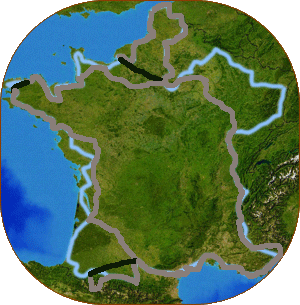

《 環法60天預計路線圖 》

藍色線條是環法預定路線、灰色線條是已完成路線、黑色是搭火車路線
| 天數 | 出發城市 | 到達城市 | 騎乘距離 |
|---|---|---|---|
| 1 | 台北 | 巴黎 | 65.76 KM |
| 2 | 巴黎 | 巴黎 | 55.64 KM |
| 3 | 巴黎 | 博韋 | 120.72 KM |
| 4 | 博韋 | 阿拉斯 | 148.2 KM |
| 5 | 阿拉斯 | 里耳 | 111.75 KM |
| 6 | 里耳 | 加萊 | 140.17 KM |
| 7 | 加萊 | 阿布維爾 | 135.23 KM |
| 8 | 阿布維爾 | 迪耶普 | 79.39 KM |
| 9 | 迪耶普 | 哈佛爾 | 113.45 KM |
| 10 | 哈佛爾 | 巴黎 | 28.35KM |
| 11 | 巴黎 | 巴黎 | 34.14KM |
| 12 | 巴黎 | 巴黎 | --KM |
| 13 | 巴黎 | 厄弗荷 | 144.04KM |
| 14 | 厄弗荷 | 開恩 | 130.23KM |
| 15 | 開恩 | 格朗維爾 | 114.22KM |
| 16 | 格朗維爾 | 雷恩 | 136.66KM |
| 17 | 雷恩 | 聖布里厄 | 167.62KM |
| 18 | 聖布里厄 | 摩爾萊 | 125.69KM |
| 19 | 摩爾萊 | 布雷斯特 | 21.72KM |
| 20 | 布雷斯特 | 坎佩爾 | 161.81KM |
| 21 | 坎佩爾 | 瓦恩 | 170.55KM |
| 22 | 瓦恩 | 南特 | 135.31KM |
| 23 | 南特 | 法國的某處 | --KM |
| 24 | 法國的某處 | 南特 | --KM |
| 25 | 南特 | CERIZAY | 102.2KM |
| 26 | CERIZAY | St.HILAIRE | 149.5KM |
| 27 | St.HILAIRE | 波爾多 | 148.18KM |
| 28 | 波爾多 | 阿讓 | 152.93KM |
| 29 | 阿讓 | 土魯斯 | 155.28KM |
| 30 | 土魯斯 | 弗瓦 | 109.26KM |
| 31 | 弗瓦 | 聖卡頓 | 97.91KM |
| 32 | 聖卡頓 | Bagneres de B. | 60.35KM |
| 33 | Bagneres de B. | 路德 | 98.12KM |
| 34 | 路德 | 腳踏車店 | 2.45KM |
| 35 | 腳踏車店 | 村上春樹 | --KM |
| 36 | 村上春樹 | Richard Dean Anderson | --KM |
| 37 | Richard Dean Anderson | 土魯斯 | --KM |
| 38 | 土魯斯 | 納荷波恩 | 169.78KM |
| 39 | 納荷波恩 | 蒙貝利耶 | 139.47KM |
| 40 | 蒙貝利耶 | SALIN DE GIRAUD | 134.4KM |
| 41 | SALIN DE GIRAUD | 卡西斯 | 142KM |
| 42 | 卡西斯 | CROIX | 130.67KM |
| 43 | CROIX | 尼斯 | 123.27KM |
| 44 | 尼斯 | 聖安德魯 | 115.36KM |
| 45 | 聖安德魯 | LUS LA CROIX HAUTE | 164.81KM |
| 46 | LUS LA CROIX HAUTE | RIVES | 121.25KM |
| 47 | RIVES | 里昂 | 132.33KM |
| 48 | 里昂 | N6公路 | 79.04KM |
| 49 | N6公路 | N74公路 | 137KM |
| 50 | N74公路 | 特瓦 | 163.59KM |
| 51 | 特瓦 | 巴黎 | 179.37KM |